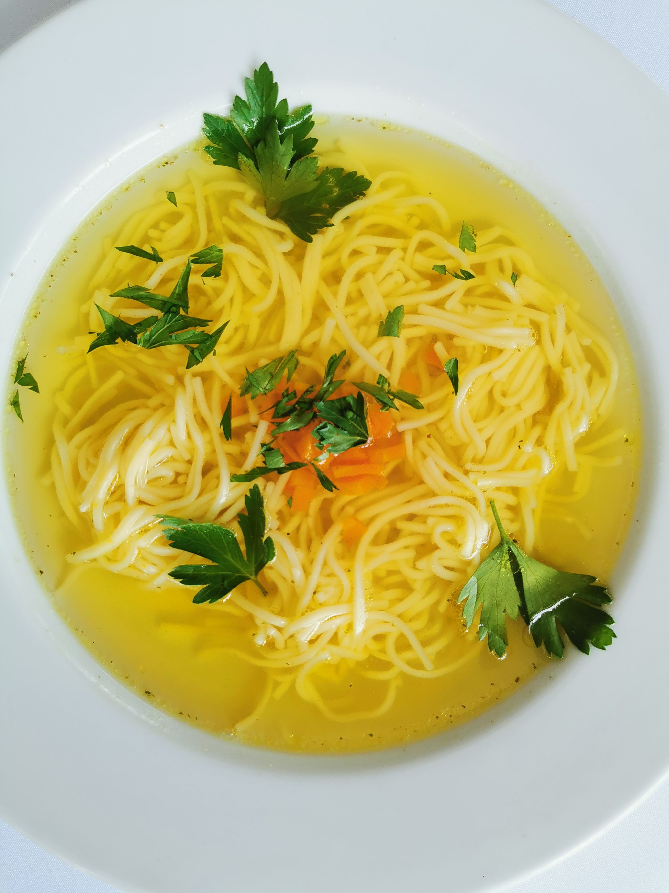

Home
Chicken Noodle Soup

Description
Quick and easy chicken noodle soup, perfect for when you don't have much time.
Ingredients
- 1 tablespoon butter
- ½ cup chopped onion
- ½ cup chopped celery
- 4 (14.5 ounce) cans chicken broth
- 1 (14.5 ounce) can vegetable broth
- 1 ½ cups egg noodles
- 8 ounces chopped cooked chicken breast
- 1 cup sliced carrots
- ½ teaspoon dried basil
- ½ teaspoon dried oregano
- salt and ground black pepper to taste
Steps
- Melt butter in a large pot over medium heat. Add onion and celery; cook until just tender, about 5 minutes.
- Stir in chicken broth, vegetable broth, egg noodles, chicken, carrots, basil, oregano, salt, and black pepper to combine; bring to a boil.
- Reduce heat; simmer for 20 minutes.
- Serve and enjoy!